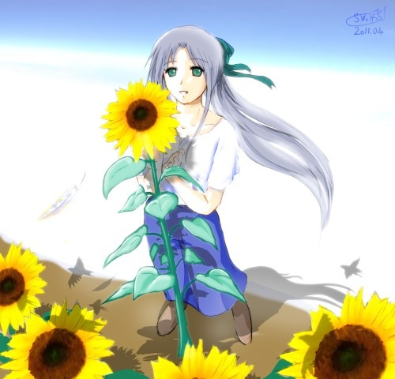
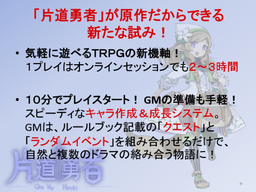

１０年のエイプリルネタを振り返ろう！
『シルバーセカンド エイプリルヒストリー』！
【ごあいさつ】
当サイト『シルバーセカンド』では、2007年からだいたい毎年、
大なり小なりエイプリルフール企画を開催してきました。
そして今回、最初の開催からいよいよ10年が経つ2017年4月1日を迎えたということで、
これまでの全エイプリルフール企画を振り返ることにしました！
ぶっちゃけて言うと、今年のネタがないので総集編です！ よければぜひお楽しみください。
エイプリル年代記
ということで、早速見て行きましょう！
最初の（比較的まともな規模の）エイプリルフール企画は2007年から開催されました！
【２００７年 じょっぱれ！ シルフェイド学院物語 リリース！】
クリックで企画ページを開く
【じょっぱれ！ シルフェイド学院物語 紹介ページ】
これまでのシルフェイドキャラクターが勢揃い！
期待の学園ものシミュレーションADV『シルフェイド学院物語』、ついに登場！！
というエイプリルフール企画です。
もちろんこの２００７年当時、シルフェイド学院物語のゲーム本体は存在しませんでした。
これがおそらくシルバーセカンドでは初めてと思われる、『
まともな』エイプリルフール企画でした。
しかし驚くべきことに、この企画はなんと数年後に実現してしまったのです！
この頃から「このサイトではエイプリルフールが（たまに）実現してしまう」ジンクスが
生まれ始めたのかもしれません。
また、このエイプリルフールのページが元になり、この後ファンの方々が
二次創作作品『
シルフェイド学院物語FAE』を開発してくださったり、
４年後の２０１１年には公式からも『
シルフェイド学院物語』が発売されることになります。
『シルフェイド学院物語』では外部データによる新たなストーリーも多く作られ、
皆さまの情熱に深く感謝するばかりです。
それと、「じょっぱれ！」は津軽の方の方便で「意地を張れ！」という意味だそうです。
【２００８年 シルフェイド学院物語、本当に作ります！】

確かこの時期はモノリスフィアをリリースした直後だったと思います。
２００８年の４月１日は特にエイプリル企画ページを作りませんでしたが、
開発日誌で「
シルフェイド学院物語、本当に作ります！」というご連絡をさせていただきました。
エイプリルフールに宣言したからボツってもいいよね！ という意図です。
このとき『シルフェイド学院物語』の目標として宣言した内容は、
恋愛シミュというよりは友情シミュADV/RPG/SRPGになりそうです。
現在構想中！ シルフェイド幻想譚みたいにゲーム性重視作品の予定です。
目標は何周でも遊べる濃厚スルメ味！
イベントの外部読み込み機能もしっかり搭載予定！
ユーザーさんの手によって自由にイベントを追加できるぞ！
また、主人公以外のキャラも時間の経過によって成長していったり
同じキャラでも場合によっては競争相手として争うことになったり、
また、仲間になったりして仲良くできたりするような、
ゲームが起こすあっと驚く展開が楽しめる一品にしたいと思ってます。
さあ、君だけのシルフェイド学院の生活を楽しもう！
という感じでした。リリースにこぎつけたのは、結局ちょうど３年後くらいの２０１１年５月となりました。
上の言葉の７０％くらいは実現できていたらいいですね。
【２００９年 誕生日に誰も祝ってくれなかったので閉鎖】
２００９年は面白いことが何も思いつかなかったのでよくあるサイト閉鎖ネタをさせていただきました。
閉鎖ネタはあんまり真剣にやると冗談っぽく見えなくて恐いのでさすがにジョークっぽくしておきました。
ページは残っていませんが、確かいつものトップページの代わりに
こんな ↓ テキストと画像を貼ってあったような気がします。
誕生日に誰も祝ってくれなかったので
シルバーセカンドは閉鎖しました。
我ながらひどい顔です。
【２０１０年 ウディタDS 発売のお知らせ！ ＋ シルフドラグーンゼロ公開！】
クリックで企画ページを開く
【ウディタDS 発売決定のお知らせページ】
「WOLF RPGエディターがついにNintando DSに進出！」
というエイプリルフールネタです。
ちょっとエイプリルフール慣れしてきたのか、それっぽい見た目の画面写真を作れた気がします。
ゲームを作るだけならまだしも、私は画面がうまく作れないものでして！
なおこの年の４月１日には、このウディタDSネタと一緒に、
『
シルフドラグーンゼロ』公開のお知らせも出しました。
シルフドラグーンゼロは本物で、データもダウンロードすることができました。
公開したときに転送量が増えすぎてサーバが落ちかけたのもいい思い出です。
『シルフドラグーンゼロ』は珍しく期限を切って作ったゲームなので、いい練習になりましたね。
『シルフドラグーンゼロ』はこの後の２０１１年に公開した『シルフェイド学院物語』の作中ゲームで、
シル学内ではストーリーなしのバージョンをゲームセンターで遊ぶことができます。
【２０１１年 エイプリルフールなし】
とても大変な年だったので、２０１１年のエイプリルフール企画はありませんでした。
代わりに、みなさんへの応援イラストを1枚描かせていただきました。

【２０１２年 シルモノ夢奇行 通販開始のお知らせ】
クリックで企画ページを開く
【「シルモノ夢奇行 通販開始のお知らせ」ページ】
「ついに自前で同人誌を発売ッ！」
というエイプリルフールネタです。モノクロ絵はほとんど描いたことがなかったのですが、
思ったより見栄えをよくしやすい印象があって描いていて楽しかったですね。
もちろん注文しようとしても売り切れです。
こういうファンブック企画、いずれ実際にやってみたいなという考えはずっとありまして、
結局一番最初に出したファンブックはこれから４年後の２０１６年に公開した『
片道勇者開発記』でした。
【２０１３年 あの片道勇者がTRPGに！？ （※自家製）】
クリックで企画ページを開く
【<自家製>片道勇者TRPGリプレイ】
『片道勇者』を自前でTRPG化！ リプレイもあるぞ！ という企画です。
『片道勇者』はこのエイプリルフールの半年前、２０１２年の８月頃にリリースされたフリーゲームです。
この頃、ちょうどTRPGをやりたかったり、TRPGのルール作りに挑戦してみたかったりしたりので、
急遽ルールを作ってみて、メンツを集めてセッションを行い、２話分だけリプレイにしたのを載せました。
それ以後もセッションを行って、全１４話まで続きました。
エイプリルフールに公開したというのがよかったのか、続きの内容もよかったのか、
最終的にのべ１０万人の方々に見ていただけたコンテンツになったので、とてもやりがいがありましたね。
しかしまとめる力がなかったのとモチベーションの枯渇で、最後は打ち切り風エンドです。ごめんなさい！
ちなみにこれ、３年後の２０１６年にKADOKAWA/冒険企画局さまから発売された『
片道勇者TRPG(企画発表ページ)』とは
まったく関係ありません。あくまでこちらは、私が自前で作ってみたルールです。
【２０１４年 シルバーセカンドはTRPGサイトになりました】
クリックで企画ページを開く

【TRPGサイト シルバーセカンド フォー・ワン】
普通にエイプリルフールサイトっぽく、
シルバーセカンドはTRPGファンのためのTRPGサイトになりました！
という感じの演出です。
最新作は忍者もの！ ということでシノビガミというTRPGのリプレイを新たに掲載したのに加えて、
<自家製>片道勇者TRPGのプレイヤーの皆さまに「ツイッターでPC達が１日を過ごす」という企画に
ご協力いただきました。
ちなみに、片道勇者TRPGは去年２０１３年の１２月に最終話と後日談を掲載して
「第一部完！」という扱いになっています。打ち切りともいいます。
【２０１５年 片道勇者、ついにコンシューマ進出！】
クリックで紹介ページを開く
【片道勇者、ついにコンシューマ進出か！？】
『片道勇者』がついにコンシューマゲーム進出！ というネタです。
ところがこれ、嘘ではありません！
本当にスパイク・チュンソフトさんの手で『片道勇者』がリメイク作として発売されることが決まったのです！
そのゲーム名は『不思議のクロニクル 振リ返リマセン勝ツマデハ』！
PS4とPS Vita用で、４ヶ月後の２０１６年７月末に発売されました。
このお話が決まったときは、昔の夢が叶ったようでとても嬉しかったのを覚えています。
いまはSteamでPC版もお安く１０００円以下で発売されていますので、遊んでみたい方はぜひどうぞ！
→
Steam『不思議のクロニクル 振リ返リマセン勝ツマデハ（Mystery Chronicle:
One Way Heroics）』
なお、『片道勇者』のネムリも原作ネタを踏襲してフリカツに登場しています！
他にも様々な要素を追加してくださっていて、自分のゲームをネタバレなしで遊べるという、
一生に一回あれば幸せすぎる体験ができました。
関係者の皆さま、本当にありがとうございました。
ついでに、『
片道勇者プラス』を正式リリースしたのも２０１５年４月１日だったりします。
それまではベータ版という扱いでした。うちの製品版ゲーム、最初は全部バグありなので、
安定するまでは「ベータ版」という扱いで販売しているんですよ。

【２０１６年 冒険企画局さまより片道勇者TRPGが発売！】
クリックで紹介ページを開く
【片道勇者、まさかのTRPG化！】
『片道勇者』がまさかの商業TRPG化！ という、嘘のようでまた本当の話です。
フリーゲームのメディアミックスで書籍化といったら９５％くらいの確率でノベル化だと思うのですが、
誰も想像しえなかったまさかの「
TRPG化」のお話をいただいてしまいました。
<自家製>のリプレイで、一人のプレイヤーさんが
「目指せ、片道TRPG出版！」と冗談混じりにおっしゃっていたのですが、
それが３年経って本当に実現してしまったのです。

ルールは＜自家製＞の方とはまったく別で、原作を踏襲した上で美しくデザインしてくださっています。
ゲームデザインの面では、本当に勉強になるところばかりでした。
『片道勇者TRPG』は、KADOKAWA/冒険企画局 様（＋ドラゴンブック編集部 様）から
このエイプリルフールから２ヶ月後の２０１６年６月１８日に発売されました。
片道勇者TRPGリプレイ 『灰の少女とヨルムンガンド』ページを開く

このルールによる『灰の少女とヨルムンガンド』というリプレイも連載させていただきました。
おかげさまで、３年ぶりにTRPG欲の面で非常に満足できました。
関係者の皆さま、本当にありがとうございました！
現在の２０１７年３月末時点で、『片道勇者TRPG』のシリーズは計３冊、発刊されています。
Amazonからお買い上げいただくこともできますので、もし気になる方がいらっしゃいましたらぜひどうぞ。
【２０１７年 そして現在へ――】
ということで１０年前からのエイプリルフールの道のりをたどってみましたが、いかがだったでしょうか？
おかげさまで、後半は事実である方が衝撃的な出来事ばかりでしたが、
さすがにこれからはいつも通りに戻っていくと思います。
今年は時間が取れなくて新たなエイプリルフールのネタを用意できませんでしたが、
今後も隙あらば、何かワクワクできるネタをご用意できればいいなと考えております！
本当は「新作スクープ！」などとうたって開発中のプロトタイプの画像を載せたかったです。
そしてエイプリルフールの今だから言いますが、
ただいま
片道勇者の次回作 を構想＆プロトタイプ開発中です！
果たして最終的に出るのか出ないのか、どこまで前作感が残ってるか分かりませんが、よければお楽しみに！
それでは皆さま、よいエイプリルフールを！
今日はここまで！ 来てくださった皆さま、本当にありがとうございました！
2017/04/01 スペシャルページ公開
ホームに戻る